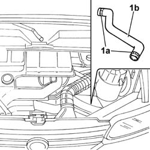
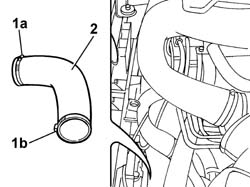
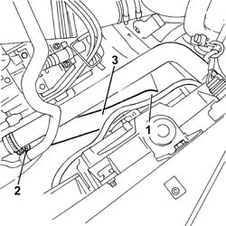
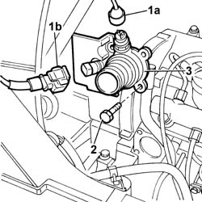
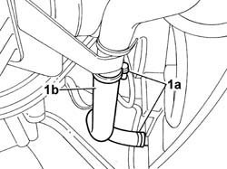

1088D10 LOWER SLEEVE FOR COOLANT OUTLET FROM RADIATOR - R + R
- Path
- Procedures > 10 ENGINE UNIT > 1088 ENGINE COOLING > 1088D COOLANT HOSES AND SLEEVES > 1088D10 LOWER SLEEVE FOR COOLANT OUTLET FROM RADIATOR - R + R
- Kind
- repair procedure (removal / refitting; the operation number is the code)
- Applies to
- all engines; all production periods
- Interactive page
- https://sloeber94.github.io/elrnDB-fDct/en/#/244000956
Applies to: engines: 2.8 JTD 8V; all production periods
 Removing
Removing
 Refitting
Refitting- Position a suitable container for collecting the engine coolant.
1. Open the retaining bands (1a) and detach the lower hose (1b).

Applies to: engines: 2.8 JTD 8V; all production periods
Refitting
Removing- Fit the lower hose on the thermostat and on the radiator.
- Renew the fastenings using the bands.
Applies to: engines: 2.0 JTD 8V; all production periods
Removing
Refitting- Position the vehicle on the lift.
Op. 7055B54 UNDER-ENGINE GUARD - R R
- Position a suitable container for collecting the coolant.
1. Disconnect the lower hose from the rigid pipe (1a) and from the radiator (1b).
2. Remove the lower radiator coolant outlet hose.

Applies to: engines: 2.0 JTD 8V; all production periods
Refitting
Removing- Fit the lower radiator coolant outlet hose.
- Connect the hose to the rigid pipe and to the radiator.
Applies to: engines: 2.3 JTD 16V; all production periods
Removing
RefittingOp. 7055B54 UNDER-ENGINE GUARD - R R
See in Op. 1088D18
1. Undo the upper and side bolts securing the timing belt protective cover.

Applies to: engines: 2.3 JTD 16V; all production periods
1. Undo thermostat electrical connections (1a) and (1b).
 | Description | Connector |
|---|---|---|
1a | Coolant temperature sending unit (for instrument panel) | K035 |
| Description | Connector |
|---|---|---|
1b | Engine coolant temperature sensor/sender unit | K036 |
2. Undo the bolts securing the thermost to the cylinder head.
3. Remove the thermostat unit from the cylinder head.

Applies to: engines: 2.3 JTD 16V; all production periods
Refitting
Removing- Change the thermostat o-ring.
- Fit the thermostat unit in its seat on the cylinder head.
- Tighten the bolts securing the thermost to the cylinder head.
 | Value - daNm | Fastening | Component | Ø |
|---|---|---|---|---|
. | - | Bolts | THERMOSTAT | - |
- Connect the electrical connections for the thermostat.
| Description | Connector |
|---|---|---|
. | Coolant temperature sending unit (for instrument panel) | K035 |
| Description | Connector |
|---|---|---|
. | Engine coolant temperature sensor/sender unit | K036 |
- Tighten the upper and side bolts securing the timing belt protective cover.
See in Op. 1088D18
Op. 0010T20 COOLANT CHECK DENSITY AND TOP UP IF NECESSARY
Applies to: engines: 2.0 16V; all production periods
Removing
RefittingOp. 7055B54 UNDER-ENGINE GUARD - R R
- Position a suitable continer for collecting the coolant.
1. Undo the retaining bands (1a) and remove the lower coolant oulet hose (1b).
- Collect the coolant in a suitable container.

Applies to: engines: 2.0 16V; all production periods
Refitting
Removing- Position the hose and renew the fastenings.